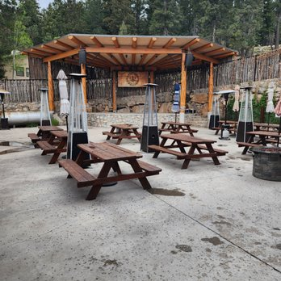
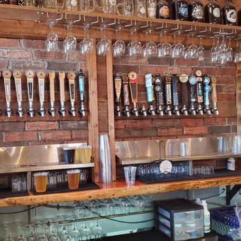
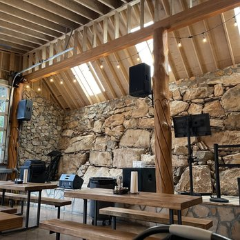
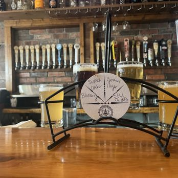
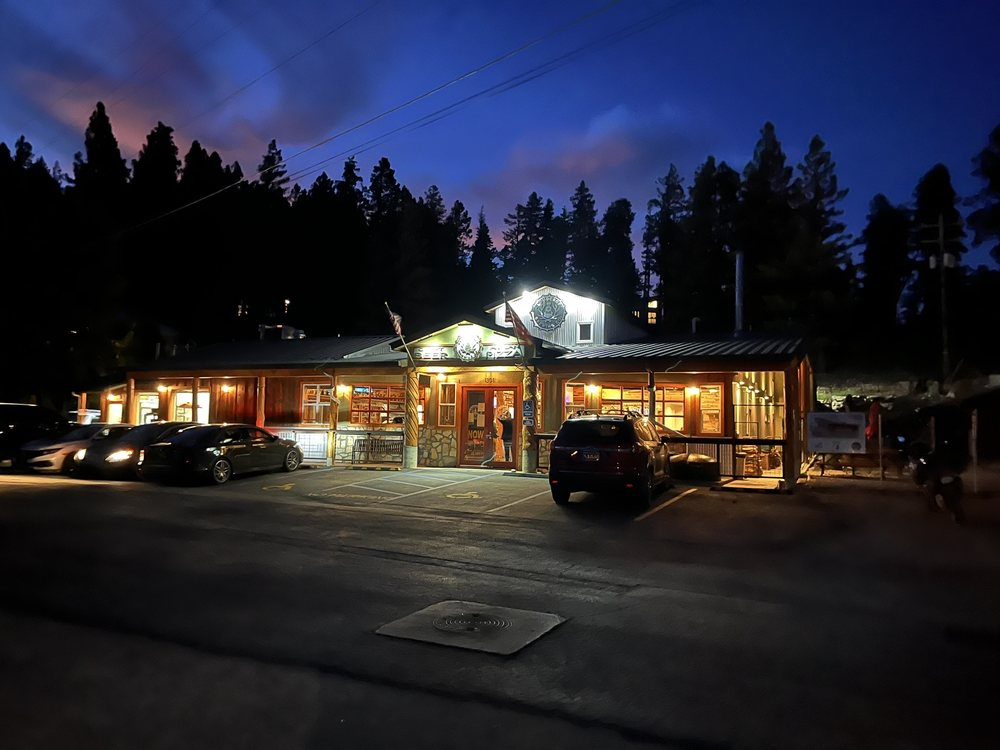
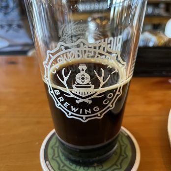
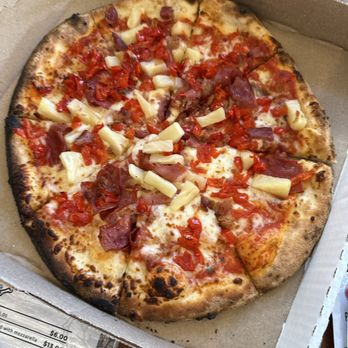
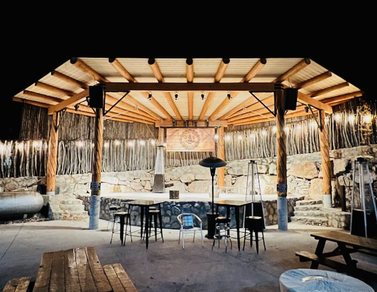
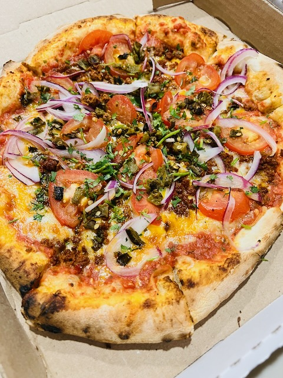

One Stop for Beer, Pizza, and an Evening Out
Cloudcroft Brewing Company is a true brewery-with-food rather than a restaurant that merely happens to serve craft beer. Housed in a renovated Forest Service tanker bay station that once held wildland firefighting engines, it has become a cornerstone of the village's food and drink scene at nearly 9,000 feet.
The official site emphasizes on-site microbrewed beer, and the kitchen is built around wood-fired pizza, salads, and soup. With indoor and outdoor seating, a family-friendly atmosphere, and recurring live music, it works as one of Cloudcroft's main evening anchors — a place where visitors often stay longer than one drink.

Casual, Social, and Event-Driven
A relaxed brewery room with indoor and outdoor seating and a weekly rhythm of karaoke and live music.
Indoor & Outdoor Seating
Indoor and outdoor seating in a family-friendly setting. Late-2024 expansion added more indoor seating and a new bar, with private-event ambitions.
Family-Friendly
The official FAQ confirms the brewery is family friendly during all operating hours. Service animals are allowed inside; note that there is no dedicated dog patio.
Weekly Entertainment
Monday karaoke 6–9 p.m., Friday and Saturday live music 6–9 p.m., and Sunday live music 1–4 p.m. Follow the brewery on Facebook or Instagram for the current schedule.
Seasonal Notes
Closed Thanksgiving and Christmas Day. Christmas Eve hours run 11 a.m. to 4 p.m. Thursdays may feature chili or Frito pie specials.
Inside Cloudcroft Brewing Company
A look at the taproom, kitchen, and atmosphere.









What Makes It Worth a Stop
Brewed on Site with Rainwater
A truly unique water source. Head brewer Elliot Bell brings 15 years of commercial brewing experience, including 12 years at Colorado Boy Pub & Brewery at 7,000 feet.
Wood-Fired Pizza Focus
The kitchen is built around wood-fired pies rather than a sprawling menu — a focused food program that earns its place next to the beer.
Live Music Most Nights
A structured weekly rhythm of karaoke and live music makes this one of the most useful live-music venues in town.
Rotating Taps
Five extra taps rotate constantly alongside the core lineup, so repeat visits pay off.
Attached Distillery
The 21+ Distillery side adds Mountain Smoke Whiskey, Skywater Vodka, Mountaintop Gin, and craft cocktails to the draw.
Take Some Home
Merchandise is sold in-house only, and visitors can buy microbrew packs and in-house spirits to take with them.
Know Before You Go
Walk-Ins Welcome
Reservations do not appear central to the experience, but if you're coming on a music night or holiday weekend, calling ahead is wise.
Mind the Kitchen Close
Food service ends earlier than closing on Friday and Saturday — the kitchen wraps at 9 p.m. even though the taproom stays open until 10 p.m.
Closed Tuesdays
The brewery is closed on Tuesdays. Monday, Friday, Saturday, and Sunday tend to feel more event-driven thanks to the entertainment schedule.
No Dog Patio
Service animals are welcome inside, but the official FAQ says there is no dog patio — plan accordingly if you're traveling with a pet.
Pair It With a Walk
Good pairings include a stroll along Burro Avenue, a stop at the Mexican Canyon Trestle Vista, or an easy hike on Osha Trail before pizza and beer.
Not a Quiet Dinner
This isn't a fine-dining destination. If you want a quieter meal or a broader entrée menu, consider a different stop in town.
Location, Hours & Contact
Location
Cloudcroft Brewing Company
1301 Burro Ave
Cloudcroft, NM 88317
Hours
- Mon11 a.m.–9 p.m.
- TueClosed
- Wed11 a.m.–9 p.m.
- Thu11 a.m.–9 p.m.
- Fri11 a.m.–10 p.m.*
- Sat11 a.m.–10 p.m.*
- Sun11 a.m.–9 p.m.
*Food service ends at 9 p.m. Fri & Sat.
Getting There
On the east side of the village at 1301 Burro Avenue. From central Cloudcroft, head east along Burro Avenue / U.S. 82 and continue through the main town stretch — the brewery sits farther east along the same corridor, easy to reach by car.
Confirm Directly Before You Go
A few things worth confirming with the brewery, especially around holidays or special events.
Current Hours
Hours shift around Thanksgiving, Christmas Eve, and Christmas Day. Check the official site or call (575) 682-2337 before planning a holiday visit.
Seasonal Menu Items
The Soup du Jour changes daily, the German Pilsner is summer-only, and Thursdays may bring chili or Frito pie specials. Call ahead if a specific item is the reason you're going.
Live Music & Events
The weekly karaoke and live music schedule is posted on the official FAQ, but specific acts and private events are best confirmed via the brewery's Facebook or Instagram.
Ready for a Pint?
Grab a table, order a wood-fired pie, and try something from the rotating taps at Cloudcroft Brewing Company.